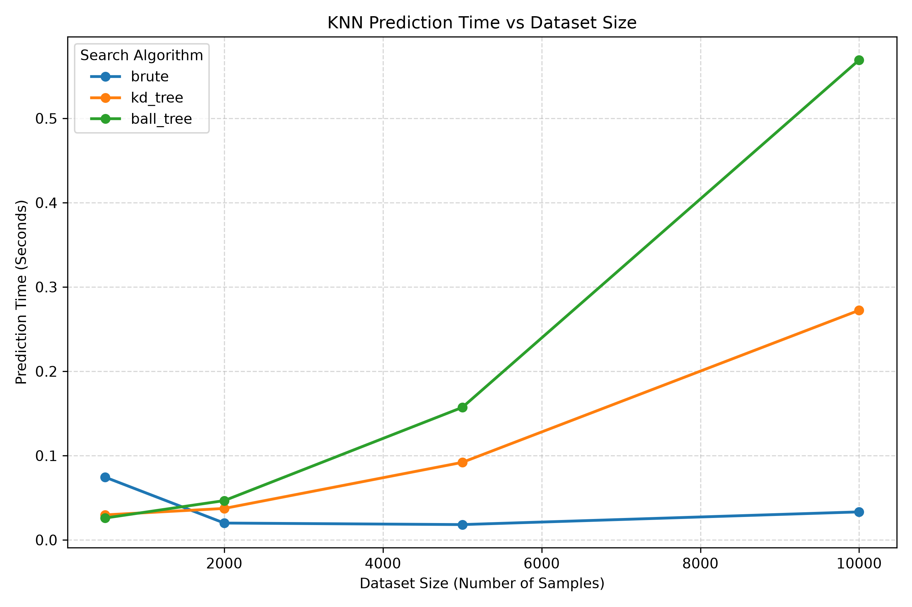

Runtime analysis
Prediction time by dataset size

Download benchmark results CSV View benchmark script
All three search algorithms produced the same accuracy at each dataset size. The benchmark uses a fixed random seed; measured times can vary between machines and runs.